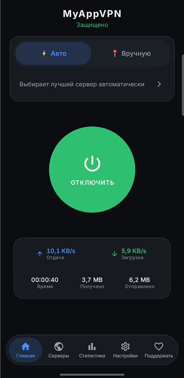
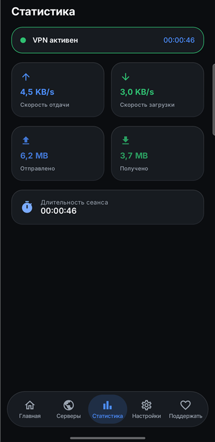

حالت خودکار
فقط یک دکمه. برنامه سرورها را آزمایش میکند و به سریعترین سروری وصل میشود که واقعاً Telegram را باز میکند — نه صرفاً سروری که کمترین پینگ را دارد.
متنباز · Android 8.0+ · Android TV
یک لمس.یک سرور فعال.
MyAppVPN یک کلاینت رایگان Xray / VLESS برای اندروید است. خودش سروری را پیدا میکند که واقعاً کار میکند، وصل میشود و اگر سرور فعلی مسدود شود، بیسروصدا شما را به سرور دیگری میبرد.
رایگان · بدون تبلیغ · بدون حساب کاربری
چه کارهایی میکند
فقط یک دکمه. برنامه سرورها را آزمایش میکند و به سریعترین سروری وصل میشود که واقعاً Telegram را باز میکند — نه صرفاً سروری که کمترین پینگ را دارد.
اگر سروری مسدود شود، ترافیک در لحظه به سرور دیگری منتقل میشود و اتصال قطع نمیشود.
یک اشتراک داخلی که رباتی هر چند ساعت یک بار آن را جمعآوری و بررسی میکند. اشتراکهای خودتان را هم میتوانید اضافه کنید.
بر پایه Xray-core. فقط سرورهای REALITY و TLS وارد فهرست داخلی میشوند.
برنامههایی را انتخاب کنید که از VPN عبور نکنند — یا برعکس، فقط برنامههای انتخابشده از طریق VPN بروند.
تکهتکه کردن TLS (اختیاری) ابتدای اتصال را خرد میکند تا DPI ساده نتواند نام سرور را بخواند.
خروجی شخصی روی یک هاست وب معمولی، برای شبکههایی که سرورهای عادی در آنها کار نمیکنند. نسخه بتا.
روی باکسها و تلویزیونهای Android TV کار میکند، VPN را از طریق نقطه اتصال به اشتراک میگذارد و کلید قطع اضطراری و VPN همیشه روشن دارد.
چطور کار میکند
آن را از GitHub Releases دانلود کنید و نصب از منابع ناشناس را مجاز کنید.
بدون حساب کاربری، بدون کلید، بدون چسباندن فایل کانفیگ.
برنامه یک سرور فعال انتخاب میکند، شما را متصل نگه میدارد و هر وقت لازم باشد سرور را عوض میکند.
تصاویر





از کلاینت دیگری استفاده میکنید؟
فهرست سرورهایی که برنامه استفاده میکند عمومی است. آن را به v2rayNG، Hiddify یا هر کلاینتی که اشتراک VLESS میخواند اضافه کنید.
https://cdn.jsdelivr.net/gh/indelingDanil/MyAppVPN-subs@output/vless.txt
پرسشها
بله. بدون اشتراک پولی، بدون تبلیغ و بدون حساب کاربری. این یک پروژه شخصی و متنباز است؛ حمایت مالی خوشحالکننده است اما اجباری نیست.
arm64 برای بیشتر گوشیها، باکسهای تلویزیون و تلویزیونها مناسب است. اگر پیام «برنامه نصب نشد» دیدید، arm32 را بگیرید — برای دستگاههای 32 بیتی و ارزانقیمت قدیمی است. Android 8.0 یا جدیدتر لازم است.
Google Play برای برنامههای VPN قوانین سختگیرانهای دارد و این برنامه با سرورهای عمومی کار میکند که مالک آنها نیست. منبع رسمی، APK در GitHub Releases است؛ بهروزرسانیها روی نسخه قبلی نصب میشوند و تنظیمات شما حفظ میشود.
اینها سرورهای عمومیاند که افراد ناشناس آنها را اداره میکنند. ترافیک رمزنگارینشده را میبینند، پس رمز عبور یا اطلاعات بانکی را از طریق آنها نفرستید. سایتهای HTTPS رمزنگاریشده باقی میمانند. برای کارهای حساس، سرور یا اشتراک خودتان را اضافه کنید.
VLESS با REALITY یا TLS روی TCP، WebSocket، gRPC، HTTPUpgrade، XHTTP و mKCP، از طریق Xray-core. بهعلاوه OpenFlux، یک حالت جداگانه با خروجی شخصی روی هاست وب.
خیر. نه تلهمتری، نه آنالیتیکس. کد منبع تحت GPL-3.0 باز است و هر کسی میتواند آن را بررسی کند.
بله، روی باکسها و تلویزیونهای دارای Android 8.0+. نسخه APK arm64 را نصب کنید؛ بیشتر باکسها از آن پشتیبانی میکنند.
آخرین نسخه در GitHub Releases. فایل مناسب دستگاه خود را انتخاب کنید: